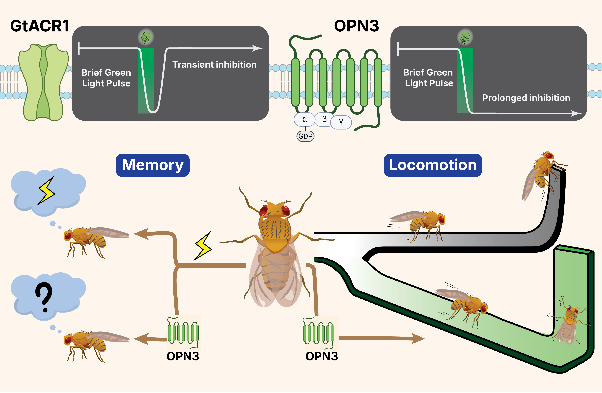
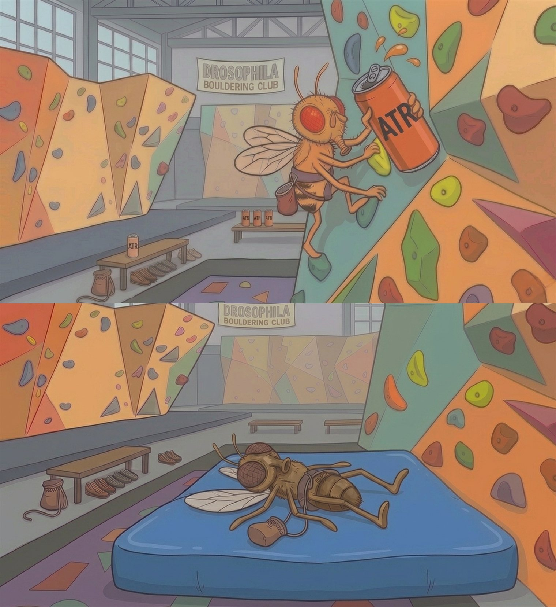

The silence after the light
Most optogenetic silencers, such as the light-gated chloride channel GtACR1, only work while the light is on. As soon as the light goes off, the neuron becomes active again. That’s a problem for behavioral experiments, where prolonged illumination can influence the very behavior you’re trying to measure.
The tool: a light-triggered, self-sustaining silencer (OPN3)

Figure 1. Graphical abstract from Lee N.M., Mai Y., Dalberg L., Anns J.C., Suresh D.D., Zhang Z. & Claridge-Chang A. (2026). Brief illumination of an optoGPCR elicits prolonged inhibition of Drosophila behavior. bioRxiv.
This work introduces a different kind of optogenetic silencer. OPN3, Opsin3 from the mosquito Anopheles stephensi, is a bistable Gi/o-coupled GPCR: a brief flash of green light triggers an intracellular signaling cascade that keeps neurons inhibited long after the light is gone. We screened three optoGPCRs in adult Drosophila, and OPN3 clearly performed best. To our knowledge, it is the first GPCR opsin shown to inhibit behavior in adult Drosophila. A light pulse as short as five seconds silenced behavior for minutes, and a single pulse was enough to abolish aversive olfactory learning across a one-minute training period. When benchmarked directly against GtACR1 in walking and memory assays, OPN3 produced comparable silencing across most neuronal populations while causing substantially less developmental toxicity and improving viability.
Because OPN3 continues working after the light is turned off, you can stimulate once and then record entirely in the dark. That matters whenever the stimulation light would otherwise interfere with the experiment, whether through cumulative light exposure during long recordings, incompatibility with calcium imaging, or heating and phototoxicity. Vision is a particularly good example: the same light needed to keep a conventional silencer active also stimulates the visual circuits you’re trying to study. OPN3 avoids that problem by separating the stimulation from the observation, letting you deliver a brief pulse first and then watch behavior in darkness.
The second finding: developmental retinal (ATR) is a lever on performance
Every opsin also needs a light-absorbing chromophore to function. The protein itself is an apoprotein and only becomes light-sensitive once retinal is bound. Because Drosophila produce too little retinal on their own, optogenetic experiments almost always involve feeding flies all-trans-retinal (ATR). By convention, that feeding begins in adulthood, after the neurons have already developed.

Figure 2. No ATR, no life. Graphical representation of ATR with regards to performance and survival. Illustration created with Nano Banana Pro, 15 June 2026.
We asked whether the timing of retinal availability mattered. Instead of feeding ATR only in adulthood, we reared flies on ATR-supplemented food throughout development. The result was surprisingly simple: flies were healthier, survived to adulthood more often, and both OPN3 and GtACR1 produced stronger optogenetic silencing. Because the same effect appeared in two mechanistically different tools, it points to developmental retinal availability as a general determinant of optogenetic performance, rather than something unique to a single opsin. In practice, it’s a simple and inexpensive change that improves both animal health and experimental performance.
To learn more: read the preprint on bioRxiv, doi:10.64898/2026.05.26.727874.
The silence after the light – Nicole M. Lee The silence after the light – Nicole M. Lee The silence after the light – Nicole M. Lee Nicole M. Lee